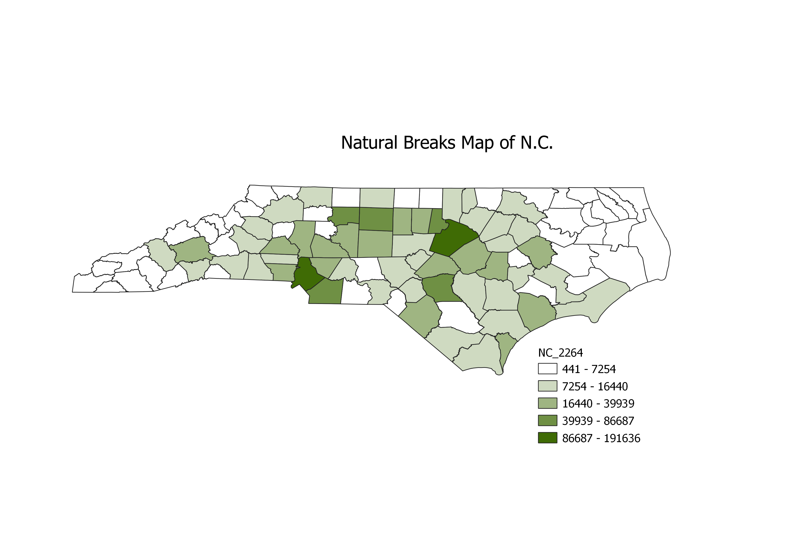

GEOG-380 Homework 8
Census Data Ratios and Categories
Bryan Muller
The assignment was to make a choropleth based on ratios and using 3 different classification schemes.
Each map is required to have a title which describes the ratio, the reason for using that ratio and
the pros and cons of each classification scheme.
This representation uses information from USGS and depicts learning disabilities in youth under the age of 18.
This choropleth is based on the Equal Interval classification
Pro: A legend that is fairly easy to interpret
Con: Most of the data will fall into only a couple categories
The choropleth below is based on the Logarithmic classification
Pro: Emphasizes the relative position of the data values
Con: Features placed within the same class can vary widely
The choropleth below is based on the Natural Breaks (Jenks) classification
Pro: Easily "tweek" data in order to make more digestible
Con: Creates classes that contain very wide ranges
